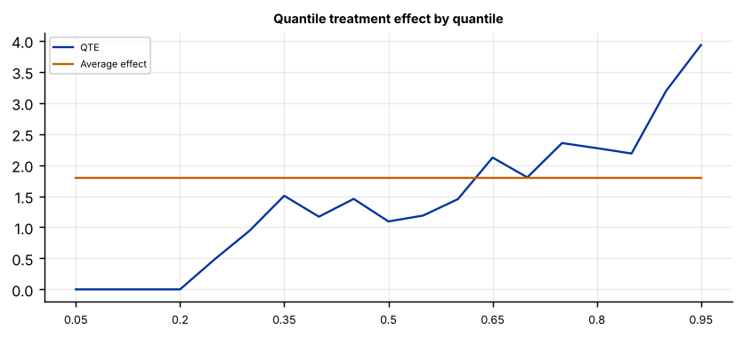

Run this model on your own data in Open Econometric Systems →
Step 1The question and the assumptions
Where in the distribution does the treatment act? For a binary treatment \(T\) the quantile treatment effect at quantile \(\tau\) is
the difference between the \(\tau\)-th quantiles of the outcome with and without treatment. With random assignment the two quantiles are estimated from the two arms and need no covariates. A QTE of 3 at the 75th percentile means that the person at the 75th percentile of the treated outcomes earns 3 more than the person at the 75th percentile of the control outcomes. It is not the effect on the person who is at the 75th percentile without treatment unless treatment leaves everybody's rank unchanged (rank invariance). The Kolmogorov-Smirnov statistic \(\sup_y |F_1(y) - F_0(y)|\) tests whether the two distributions are equal, and its one-sided versions test dominance.
Three checks before you report quantile effects
- Is treatment randomised or ignorable? Without it the difference in quantiles is not causal.
- Does a rank-preserving reading make sense? Say whether you mean a shift of the distribution or an effect on individuals at a rank.
- Are many quantiles tested? Pointwise intervals do not control the error across the grid, so do not pick the quantile with the largest effect after looking.
How to write it: the model
We ask where in the earnings distribution job training acts. The treatment is random assignment to the National Supported Work programme and the outcome is earnings in 1978, in thousands of dollars. We estimate quantile treatment effects at the 10th, 25th, 50th, 75th and 90th percentiles as differences between the quantiles of the treated and control groups, with percentile confidence intervals from 500 bootstrap resamples. We compare them with conditional quantile regressions on age, education, race, marital status, degree status and earnings in 1974 and 1975, and test equality and first-order dominance of the two distributions with Kolmogorov-Smirnov statistics and permutation p-values.
Step 2Load the data and look at the outcome
import numpy as np
import pandas as pd
import oes_engine as oes # pip install -e open-econometric-systems/oes-engine
data = open("nsw_mediation.csv").read()
df = pd.read_csv("nsw_mediation.csv")
covs = ["age", "educ", "black", "hisp", "married", "nodegree", "re74", "re75"]
print(len(df), "workers;", int(df.train.sum()), "treated")
print(df.groupby("train").re78.describe().round(2))
print("share with zero earnings:", (df.re78 == 0).groupby(df.train).mean().round(3).to_dict())445 workers; 185 treated
count mean std min 25% 50% 75% max
train
0 260.0 4.55 5.48 0.0 0.00 3.14 7.29 39.48
1 185.0 6.35 7.87 0.0 0.49 4.23 9.64 60.31
share with zero earnings: {0: 0.354, 1: 0.243}How to read it
Mean earnings are 6.35 for the trained and 4.55 for the controls, an average gain of 1.79 thousand dollars. A large part of each group has no earnings at all: 35.4% of the controls and 24.3% of the trained. The outcome is therefore a mass at zero followed by a long right tail, and the mean is driven by the tail. This is the kind of distribution where an average effect says little about who gains, and the lower quantiles cannot move if the programme does not get people out of zero earnings.
Step 3Estimate the quantile treatment effects
spec = dict(outcome="re78", treat="train", covariates=covs, boot=500, taus="0.1,0.25,0.5,0.75,0.9")
r = oes.run("qte", data, spec)
oes.summary(r)
oes.show(r, "Quantile treatment")
oes.plot(r, "Quantile treatment effect by", ncols=1, size=(6.5, 3))Observations: 445
Average effect: 1.7943
KS statistic: 0.1321
KS p-value: 0.039
QTE at median: 1.0935
Quantile treatment effects of train on re78
Control quantile Treated quantile QTE Bootstrap SE 95% CI low 95% CI high
Quantile
0.10 0.000 0.000 0.0000 0.0000 0.0000 0.0000
0.25 0.000 0.485 0.4852 0.3603 0.0000 1.0765
0.50 3.139 4.232 1.0935 0.8822 -0.4792 2.9866
0.75 7.288 9.643 2.3546 0.8413 0.6230 3.8453
0.90 11.355 14.553 3.1978 1.8444 0.0669 6.5422
Note: The average effect (difference in means) is 1.7943. Bootstrap percentile intervals with 500 resamples; the quantiles are not simultaneous.
How to read it
The effect is zero at the 10th percentile, where both groups have zero earnings. At the 25th percentile it is 0.49 (0.00 against 0.49, interval 0.00 to 1.08): the share of zeros is 35% among the controls and 24% among the trained, so the 25th percentile of the controls is still zero while that of the trained is positive. At the median the effect is 1.09 (3.14 against 4.23, interval -0.48 to 2.99), at the 75th percentile 2.35 (7.29 against 9.64, interval 0.62 to 3.85) and at the 90th percentile 3.20 (11.36 against 14.55, interval 0.07 to 6.54). The gains grow along the distribution and their intervals exclude zero only at the 75th and 90th percentiles, so the programme moves the upper part of the earnings distribution most. The average of 1.79 is the weighted total of these.
Step 4Add covariates: conditional quantile regression
oes.show(r, "Conditional quantile")Conditional quantile regression: coefficient on the treatment
Coefficient Std. error p-value
Quantile
0.10 0.0000 0.5021 1.0000
0.25 0.0000 0.4425 1.0000
0.50 1.0683 0.6149 0.0830
0.75 2.6495 0.7800 0.0007
0.90 2.1344 1.1336 0.0604
Note: Adjusts for the covariates. The coefficient is a conditional quantile effect, which equals the QTE only if the covariate effect is constant across quantiles.How to read it
With the covariates the coefficient on treatment is 0.00 at the 10th and 25th percentiles, 1.07 at the median (p = 0.083), 2.65 at the 75th percentile (p = 0.0007) and 2.13 at the 90th (p = 0.060). The pattern matches the unconditional effects and the 75th percentile is now sharply estimated, because the covariates, mainly earnings in 1974 and 1975, explain much of the spread. A conditional quantile effect is the effect at a quantile of the outcome among workers with the same covariates, so it equals the unconditional QTE only if the covariates affect all quantiles alike. Here the two agree closely, which is what randomisation implies on average.
Step 5Test whether the distributions differ
oes.show(r, "Tests on the whole")Tests on the whole distribution (permutation p-values, 999 draws)
Statistic p-value
Null hypothesis
Equal distributions (Kolmogorov-Smirnov) 0.1321 0.039
Treated outcome is not larger in the first-order dominance sense (reject: treated stochastically larger) 0.1321 0.012
Control outcome is not larger in the first-order dominance sense (reject: control stochastically larger) 0.0000 1.000
Note: A rejection of the first line says the distributions differ. A rejection of the dominance line says the treated (or control) distribution lies to the right at every point.How to read it
The Kolmogorov-Smirnov statistic is 0.132, with a permutation p-value of 0.039, so the earnings distributions of the two groups differ at the 5% level. The one-sided test of dominance rejects that the treated outcome is not larger (p = 0.012), while the test in the other direction cannot be rejected (statistic 0.000, p = 1.0). The treated distribution lies to the right of the control distribution at every earnings level: there is no earnings level at which the trained workers are more likely than the controls to be below it. This is a stronger statement than a positive average, because it implies that every utility function that increases in earnings gives a higher value for training.
Step 6Robustness to the quantile grid and the bootstrap
rows = {}
for name, tau in {"deciles": "0.1,0.2,0.3,0.4,0.5,0.6,0.7,0.8,0.9", "upper tail": "0.6,0.7,0.8,0.9,0.95"}.items():
for seed in (0, 1):
rr = oes.run("qte", data, dict(outcome="re78", treat="train", taus=tau, boot=300, seed=seed))
for x in rr["tables"][0]["rows"]: rows.setdefault((float(x[0])), []).append(float(x[3]))
print(pd.DataFrame({"QTE": {k: round(np.mean(v), 3) for k, v in rows.items()}, "range across runs": {k: round(max(v) - min(v), 3) for k, v in rows.items()}}))QTE range across runs 0.10 0.000 0.0 0.20 0.000 0.0 0.30 0.943 0.0 0.40 1.170 0.0 0.50 1.094 0.0 0.60 1.452 0.0 0.70 1.802 0.0 0.80 2.273 0.0 0.90 3.198 0.0 0.95 3.932 0.0
How to read it
The point estimates do not depend on the grid or the seed, because they are differences of sample quantiles, so the range across runs is zero; only the bootstrap intervals move with the seed. The effect is zero up to the 20th percentile, 0.94 at the 30th, about 1.1 to 1.5 through the middle of the distribution and rising in the upper tail and reaching 3.20 at the 90th and 3.93 at the 95th percentile. A sensible summary is the shape (zero in the bottom fifth, increasing above) and not any single quantile, and the intervals at individual quantiles should not be read as simultaneous.
Step 7Write the results
How to write it: results
Assignment to job training raises mean earnings by 1.79 thousand dollars, but the gain is not spread evenly. The quantile treatment effect is zero at the 10th percentile and 0.49 at the 25th, where a third of the controls have no earnings, 1.09 at the median (95% bootstrap interval -0.48 to 2.99), 2.35 at the 75th percentile (0.62 to 3.85) and 3.20 at the 90th (0.07 to 6.54). Conditional quantile regressions with covariates give the same pattern (2.65 at the 75th percentile, p = 0.0007). A Kolmogorov-Smirnov test rejects equality of the earnings distributions (p = 0.039) and the one-sided test rejects that the control distribution lies to the right (p = 0.012), so the treated distribution dominates the control distribution in the first-order sense. We read the effects as differences between distributions, not as effects on individuals at a given rank, which would need rank invariance, and we do not adjust the quantile intervals for the number of quantiles examined.
| Report | What | Where |
|---|---|---|
| Design | Quantile effect, rank invariance | Step 1 |
| Data | Outcome distribution, mass at zero | Step 2 |
| QTE | Quantiles, bootstrap intervals, chart | Step 3 |
| Conditional | Quantile regression with covariates | Step 4 |
| Tests | KS equality and dominance | Step 5 |
| Robustness | Quantile grid and seed | Step 6 |
References. Doksum, K. (1974), "Empirical Probability Plots and Statistical Inference for Nonlinear Models in the Two-Sample Case," Annals of Statistics 2. Koenker, R. and Bassett, G. (1978), "Regression Quantiles," Econometrica 46. Abadie, A. (2002), "Bootstrap Tests for Distributional Treatment Effects in Instrumental Variable Models," Journal of the American Statistical Association 97. Firpo, S. (2007), "Efficient Semiparametric Estimation of Quantile Treatment Effects," Econometrica 75. Chernozhukov, V., Fernández-Val, I. and Melly, B. (2013), "Inference on Counterfactual Distributions," Econometrica 81.